ALGORITMOS DE BUSCA
BUSCA LINEAR
Este é o algoritmo de busca mais simples. Ele verifica sequencialmente cada elemento de uma lista ou array até encontrar o elemento desejado. Esse algoritmo é útil para coleções não ordenadas (por exemplo, listas, arrays). Vamos aprender a utilizá-lo!
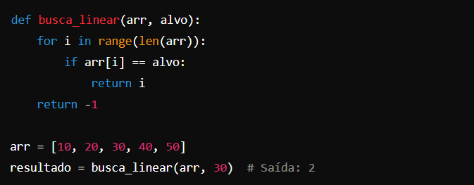
Explicação: a primeira linha do código está fazendo a definição da Função busca_linear(arr, alvo), que recebe dois parâmetros: arr(uma lista de números) e alvo(o valor que queremos encontrar na lista). Na segunda linha temos um laço de for i in range(len(arr)); que vai percorrer a lista arr usando o índice i, que vai de 0 até o comprimento da lista (len(arr)). range(len(arr)) cria uma sequência de números começando em 0 até o tamanho da lista, para iterar por cada elemento.
Na terceira linha temos uma condição if arr[i] == alvo, que para cada iteração, a função verifica se o elemento no índice i da lista (arr[i]) é igual ao valor que estamos procurando (alvo). Se o valor for encontrado, irá realizar a a quarta linha, com return i, que faz a função retornar o índice i onde o elemento foi encontrado.
Na quinta linha temos return -1; se o laço for terminar e o valor alvo não for encontrado em nenhuma posição da lista, a função retorna -1, indicando que o valor não está presente na lista.
arr = [10, 20, 30, 40, 50]
resultado = busca_linear(arr, 30) # Saída: 2, aqui, estamos buscando o valor 30 na lista arr. A função busca_linear vai verificar cada elemento da lista: arr[0] == 10 (não é igual a 30, então continua). arr[1] == 20 (não é igual a 30, então continua). arr[2] == 30 (é igual a 30, então retorna 2, que é o índice onde o número 30 está localizado).
BUSCA BINÁRIA
Este é um algoritmo de busca mais eficiente para listas ordenadas. Ele divide repetidamente o intervalo de busca pela metade, descartando a metade que não é relevante. Ele é altamente utlizado apenas em estruturas de dados ordenadas.
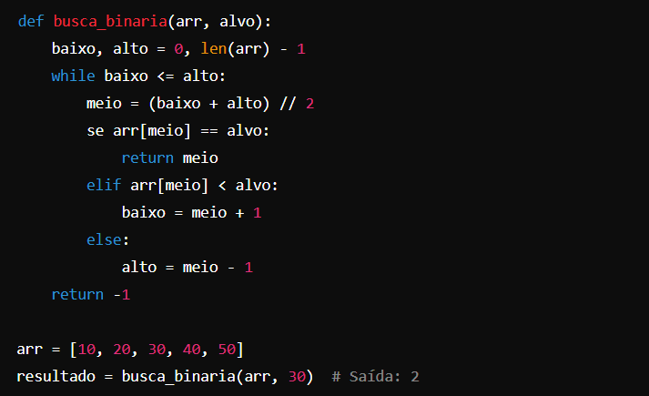
Explicação: busca_binaria(arr, alvo) - definição da Função
baixo = 0 - representa o índice inicial da lista (primeiro elemento).
alto = len(arr) - 1 - representa o índice final da lista (último elemento).
while baixo <= alto - o laço continua enquanto o valor de baixo for menor ou igual ao valor de alto. Isso indica que ainda há elementos no intervalo a serem verificados. Se baixo ultrapassar alto, significa que o intervalo acabou e o valor não foi encontrado.
meio = (baixo + alto) // 2 - a cada iteração, o programa calcula o índice meio da lista, que é o ponto central do intervalo atual.
if arr[meio] == alvo: - se o valor no índice meio da lista for igual ao alvo, a função retorna o índice meio, pois o valor foi encontrado.
elif arr[meio] < alvo: - se o valor no índice meio for menor que o alvo, significa que o valor desejado está na metade superior da lista. Então, o valor de baixo é atualizado para meio + 1, eliminando a metade inferior da busca.
else: - se o valor no índice meio for maior que o alvo, significa que o valor desejado está na metade inferior da lista. O valor de alto é atualizado para meio - 1, eliminando a metade superior da busca.
return -1 - se o laço terminar e o valor não for encontrado, a função retorna -1, indicando que o valor não está presente na lista.
BUSCA EM STRINGS
O Python fornece vários métodos embutidos para strings para buscar substrings. É muito utilizado para trabalhar com dados textuais. Exemplo:
str.find(substring): Retorna o índice da primeira ocorrência da substring, ou -1 se não for encontrada.
str.index(substring): Semelhante a find, mas gera um erro se não for encontrada.
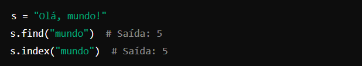
Explicação: criamos uma varíavel s e armazenamos o valor "Olá, mundo!' nela. Em s.find("mundo"): o método está procurando pela substring "mundo" na string s. A substring "mundo" começa na posição 5 da string "Olá, mundo!", então a função find() retorna o índice 5.
s.index("mundo"): - Assim como o find(), o método index() encontra a posição onde a substring "mundo" começa, que é o índice 5. O método index() funciona de forma semelhante ao find(), buscando uma substring dentro da string original. A diferença é que, se a substring não for encontrada, ele lança uma exceção (ValueError), em vez de retornar -1.
BUSCA EM DICIONÁRIOS
A busca em dicionários (tabelas de hash) é muito eficiente, pois as chaves do dicionário são "hashed". Pode ser utilizado quando você precisa procurar chaves específicas em um dicionário.
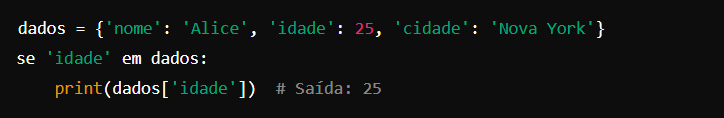
Explicação: o dicionário dados armazena três pares chave-valor. O código verifica se a chave 'idade' está presente no dicionário. Se a chave existir, o valor correspondente (25) é impresso.
BUSCA COM EXPRESSÕES REGULARES (Regex)
Para buscas baseadas em padrões em strings, você pode usar o módulo re para buscar padrões usando expressões regulares. Útil quando você precisa de padrões complexos de busca em strings.
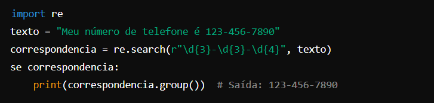
Explicação: re.search() procura na string texto por um padrão de número de telefone usando uma expressão regular. Se o número for encontrado, o objeto correspondencia contém o resultado. O método .group() exibe o texto que correspondeu ao padrão. A saída será o número de telefone formatado encontrado na string.
BUSCA EM LARGURA (BFS) E BUSCA EM PROFUNDIDADE (DFS)
São algoritmos de busca em grafos/árvores usados para percorrer ou buscar em grafos ou árvores. São tipicamente utilizados em problemas mais avançados, como busca de caminhos, desenvolvimento de jogos ou análise de redes.
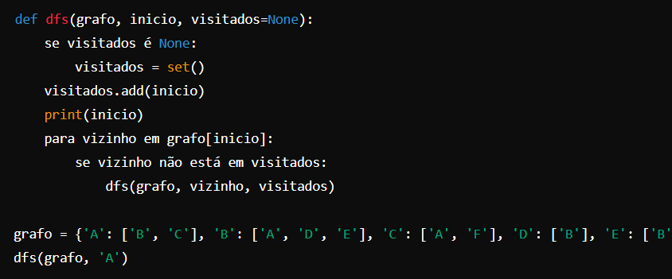
Explicação: a função dfs() realiza uma busca em profundidade recursiva em um grafo. A função visita o nó de início e explora seus vizinhos de forma recursiva, até que todos os nós conectados sejam visitados. O conjunto visitados previne visitas repetidas a nós, evitando loops.
ALGORITMOS DE ORDENAÇÃO
BOLHA
Compara pares de elementos adjacentes e os troca se estiverem na ordem errada. Esse processo é repetido até que a lista esteja ordenada.
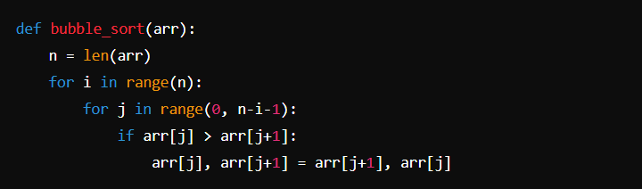
ORDENAÇÃO POR SELEÇÃO
Encontra o menor elemento em cada iteração e o coloca na posição correta. Repetido para o próximo menor elemento.
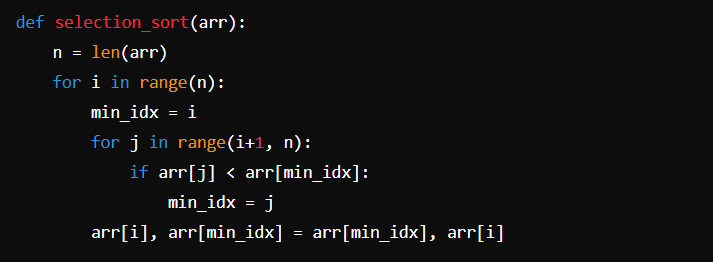
ORDENAÇÃO POR INSERÇÃO
Constrói a ordenação final um item de cada vez, movendo elementos maiores para a direita e inserindo o elemento atual no local correto.
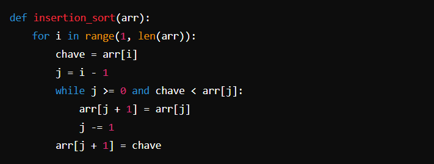
ORDENAÇÃO POR MERGESORT
Divide a lista em duas metades, ordena cada metade recursivamente e depois as combina.
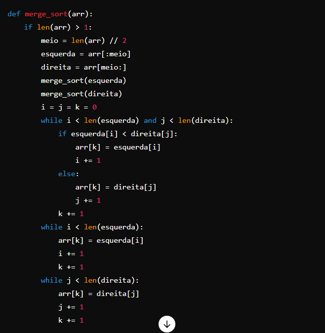
ORDENAÇÃO POR QUICKSORT
Seleciona um "pivô" e particiona a lista em elementos menores e maiores que o pivô, ordenando recursivamente.
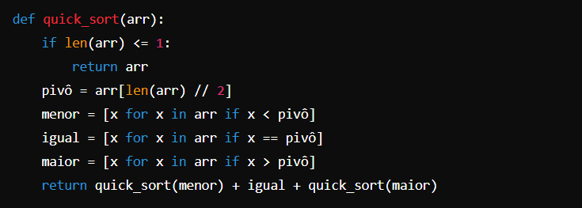
ORDENAÇÃO POR HEAP SORT
Constrói um heap (uma árvore binária completa) e retira os maiores elementos de forma ordenada.
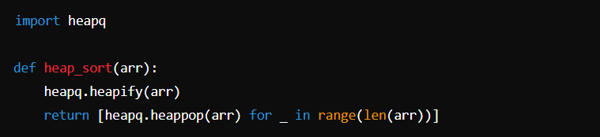
ORDENAÇÃO POR CONTAGEM
Conta a frequência de cada valor e usa essa informação para ordenar a lista. Funciona melhor com inteiros e intervalos limitados.
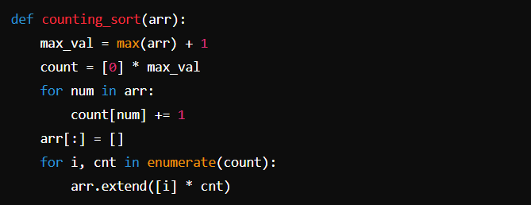
ORDENAÇÃO POR RADIX
Ordena números inteiros processando dígitos individuais. Funciona melhor com números inteiros e tem uma complexidade linear para um número fixo de dígitos.
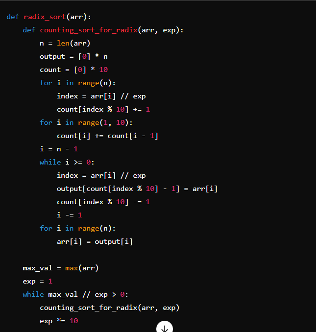